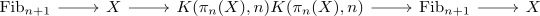

serres method of truncation for homotopy groups of spaces
Proposition
Let $X$ be an anima (think of $S^n$) To compute the homotopy groups of $X$ we can proceed as follows
- compute (as much as possible about) the homology/cohomology of $X$
- assume that $X$ is \(n-1\)-connected, at least simply connected (might need this, possibly only for convenience)
- have $\pi_n(X)$ computed, e.g. reducing it to $H_n(X,\mathbb{Z})$ by the Hurewicz theorem.
- then consider the fiber sequence
\begin{align*}
K(\pi_{n+1}(X),n+1) \rightarrow \tau_{\leq n + 1} X \rightarrow \tau_{\leq n}(X) \cong K(\pi_n(X), n))
\end{align*}
now the fiber is the \(n+\)-connected cover (therefore the notation $\mathrm{Fib}_{n+1}$, so in particular $\pi_*(\mathrm{Fib}) \simeq \pi_*(X)$ for $* \geq n+1$
- now to compute $\pi_{n+1}(\mathrm{Fib}_{n+1})$ we may instead compute the homology (and use Hurewicz).
- use some of the fiber sequences

and homological serre spectral sequence / cohomological serre spectral sequence (& universal coefficient Theorem for cohomology) to compute as much as possible about $H_*(\mathrm{Fib}_n)$ (preferably using the multiplicative structure of cohomology).
- repeat at step 2)